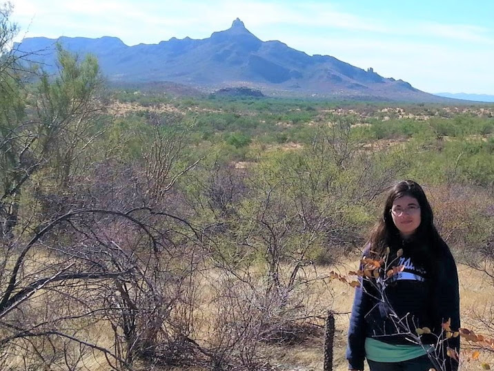

Ecól. Rocío Jazmín Guzmán Ojeda
Soy ecóloga y estudiante de Maestría en Ciencias Biológicas en la UNAM. Actualmente trabajo con la ecología de una población vulnerable de una libélula en un área urbana. Me interesa entender cómo las poblaciones y comunidades de invertebrados son afectadas por cambios en sus interacciones ecológicas. También me interesan los inventarios biológicos y la conservación de fauna silvestre.Educación
- Maestría en Ciencias Biológicas. [En Proceso]. Instituto de Biología, Universidad Nacional Autónoma de México.
- Licenciatura en Ecología. 2016. Universidad Estatal de Sonora. Hermosillo, Sonora, México.
Contacto:
rocio.j.guzman@gmail.com
Instituto de Biología, Departamento de Zoología, Universidad Nacional Autónoma de México.
Instituto de Biología, Departamento de Zoología, Universidad Nacional Autónoma de México.